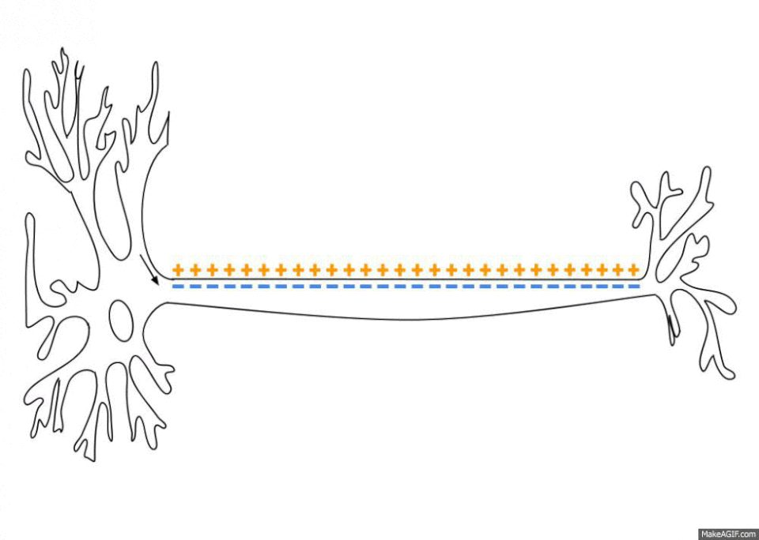

La neurona como pila
En reposo, el interior de una neurona tiene una carga negativa de unos -70 milivoltios respecto al exterior. Esa diferencia se mantiene gracias a la bomba de sodio-potasio, que saca sodio y mete potasio, y a canales que dejan escapar potasio.
El disparo
Cuando la suma de señales que recibe la neurona supera un umbral (unos -55 mV), se abren de golpe canales de sodio dependientes de voltaje. El sodio entra y el interior se vuelve positivo (hasta unos +40 mV). Enseguida esos canales se cierran y se abren los de potasio, que sale y devuelve el voltaje a su valor negativo. Todo ocurre en alrededor de un milisegundo.
Es una respuesta de todo o nada: la intensidad de un estímulo no se codifica por el tamaño del impulso, sino por su frecuencia (cuántos por segundo).
La propagación
El potencial de acción se regenera a lo largo del axón como una fila de fichas de dominó. En los axones con mielina salta de un nódulo de Ranvier al siguiente (conducción saltatoria), lo que lo hace hasta 100 veces más rápido.
Cómo se descubrió
En 1952, Alan Hodgkin y Andrew Huxley midieron las corrientes iónicas en el axón gigante del calamar, de casi un milímetro de grosor, y describieron el proceso con ecuaciones matemáticas que todavía se usan. Recibieron el Nobel en 1963.
En la práctica
Muchos fármacos actúan sobre estos canales: los anestésicos locales bloquean los canales de sodio, igual que varios antiepilépticos (carbamazepina, lamotrigina) y la tetrodotoxina del pez globo. Algunas epilepsias, migrañas y dolores hereditarios se deben a mutaciones de canales iónicos (canalopatías).
Fuentes
- Hodgkin AL, Huxley AF. A quantitative description of membrane current and its application to conduction and excitation in nerve. J Physiol. 1952;117:500-44. doi:10.1113/jphysiol.1952.sp004764.
- OpenStax. Anatomy and Physiology 2e: The action potential.